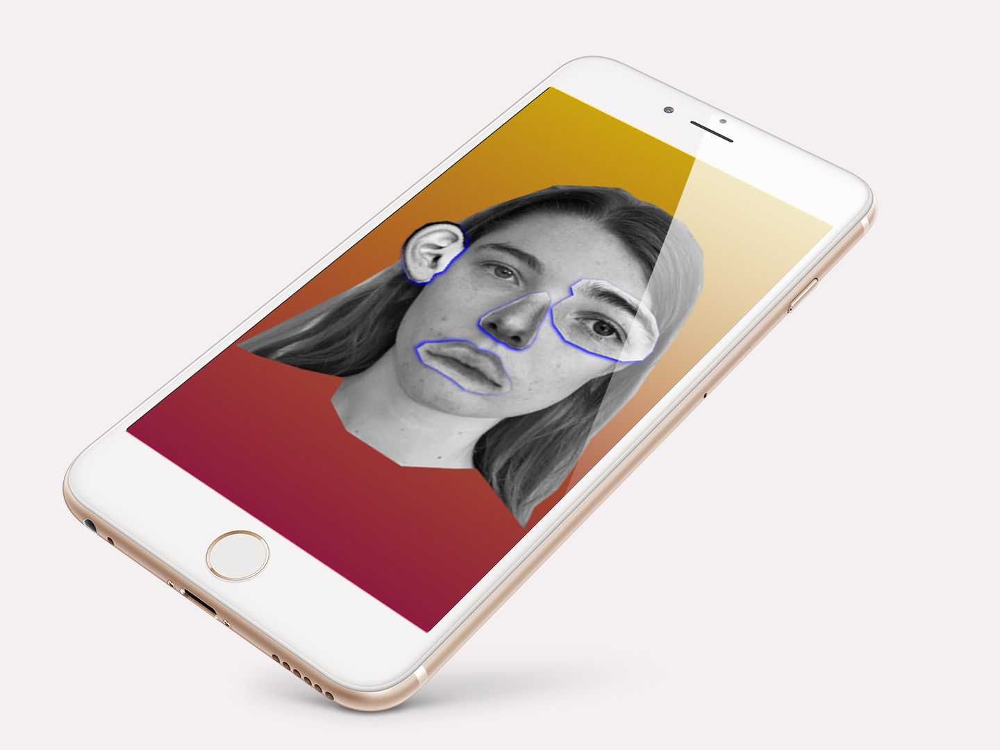
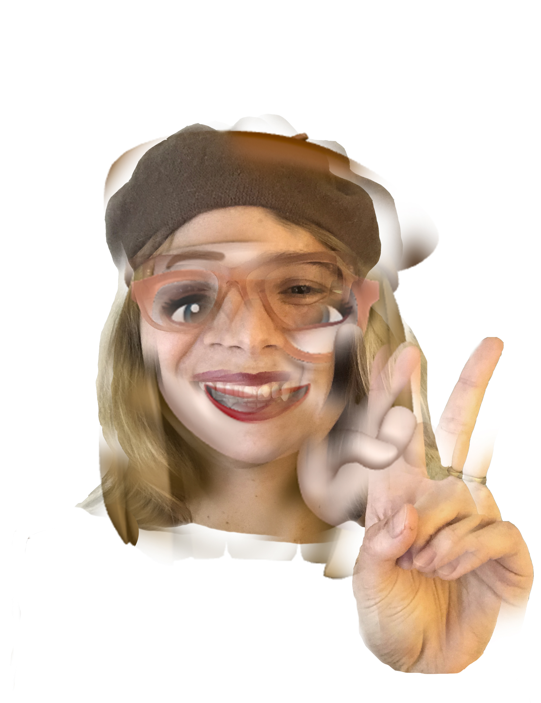
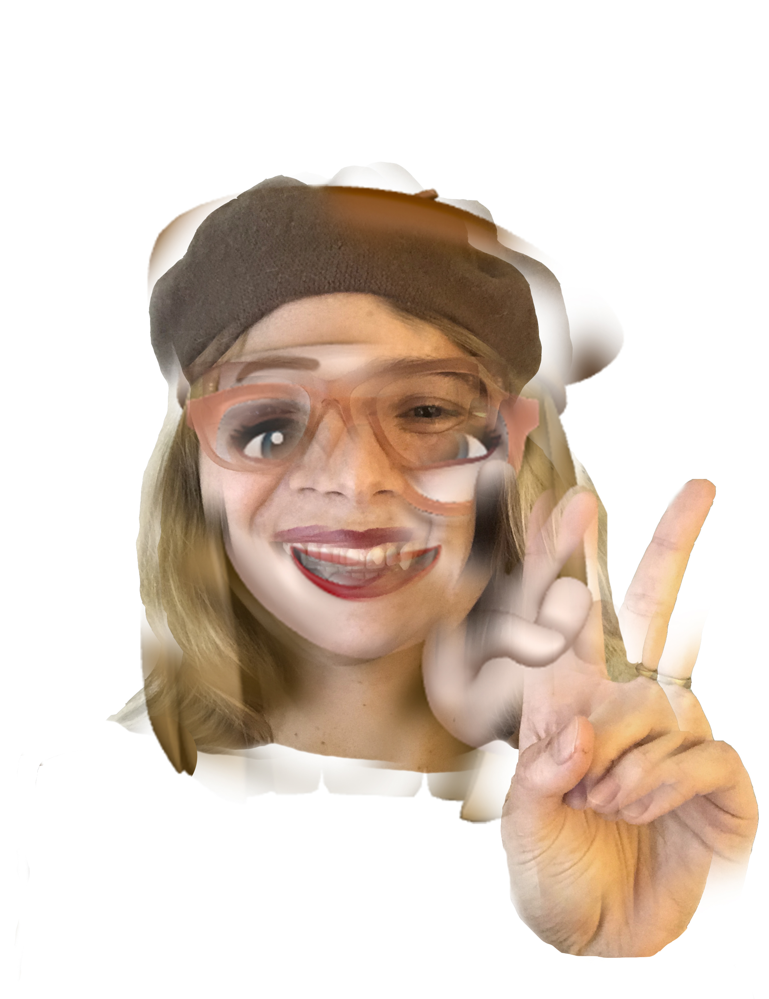

This has been a year of loss, both personal and universal. But for the Thesis class of 2021, it’s also been a time of getting lost: in the process, in our minds, in our work. In her book A Field Guide to Getting Lost, Rebecca Solnit says, “Lost really has two disparate meanings. Losing things is about the familiar falling away, getting lost is about the unfamiliar appearing.” In an unfamiliar world, we’ve been restricted to a year of virtual classes and critiques. But rather than letting this technological mediation interfere in our work, we’ve managed to wander through uncharted territory, arriving at singular moments of beauty, innovation, and potential. Connecting the dots across cyberspace, we arrive here, together. Where are we? What the hell (is going on)? celebrates the work created as we’ve navigated through an unfamiliar year of wide unknowns. We welcome you to come into our process, and get lost with us. This is not a final destination, just an anchor on our voyage. We are still sailing in different directions, sailing into the unknown.
Corporeal Computer

Statements
As we slip towards digitality, our sense of self is warping. My thesis is an investigation into how we perform identity in cyberspace, what it means to have a body in this increasingly digital era, and how the tools...MORE and interfaces we engage with are altering our sense of reality and self. 

PUNKETTE

Statements
I have created an alter ego that was born from my admiration and research of 70's punk women. My alter ego, GG, helps me explore different mediums and create spaces for conversations in a new and exciting way that I would not be able to do as a solo designer. ...MORE

Handle With Care

Statements
How can graphic design and printed matter encourage vulnerability, connection, and care while shedding light on maintenance and interdependence?...MORE


The future forms of brand
Statements
In my thesis, I address and explore the necessity of being flexible in a brand in response to the current ever-changing society and technology development. I study branding history, meaning, and brand identity,...MOREand look at different examples and brand expert’s methods. Current norms of static brands suffer from top-down and one-sided communication methods that do not correspond to contemporary needs and expectations. I use these drawbacks as an inspiration to explore ways of producing varied iterations of symbols and reflecting people's thoughts and preferences in logos using generative and real-time data.

Words when they aren’t words Tested through experiments . . . Toy Book Things

Statements
Words when they aren't words... is series of experiments focused on exploring possibilities for how we understand what a word is or can be. ...MORE This expolartion is anchored by unique art books that also challenge the convention of how we read books, how we turn pages, and how we understand (or don't understand) words.
Post Nature: Artifacts of Disintegration
Statements
My work invites viewers to imagine a speculative future in which humanity is forced to live indoors due to the dire conditions of the outside world. With little to no access to nature...MORE,people are left with a romanticized view of the past, a profound sense of loss, and the weight of fault on their shoulders, and as a result, ecological grief has become embedded within this new Post-nature era. As people learn to let go of the physicality of the natural world, they must cope by creating new digital, conceptual, and spiritual relationships with nature and embrace a new ecocentric perspective.
Balanscape

Statements
A humane virtual workspace.It has been a year since the lockdown of the pandemic, and there are issues around employees working overtime ...MORE and not having enough personal time. Speculating the future, I think the workspace will highly likely become a hybrid one, meaning there will be part of the workers working from home permanently. Therefore, my thesis is aiming to explore and build a more humane virtual work place that acknowledges human needs and takes care of the workers, instead of thinking productivity and efficiency as the top priorities of the companies.


data-driven 3D generative design: : Methodology and Application

Statements
Within science and technology development, people are giving up the decision-making right, and this phenomenon will be more and more intensifying....MOREIn the design and art field, we might have to assign our decision-making right to other things, for making the outcome has the property of beyond our conventional logic's expectation. In this process, we might cooperate with artificial intelligence to using its ability. To achieve the purpose, we should use the numerical data as the "machine language" for giving instruction
Bempathy
Statements
Objects have always conveyed materially-embedded messages about the experiences, thoughts, emotion and behaviours of their owners. As a designer or maker, I truly believe ...MORE the object as a mirror can present some emotion and help us empathetic with others. In my thesis exploration, I try to do some experiments with projecting the negative emotion into positive objects to help people build the emotion empathetic. I use VR technology to project bullying stories onto cuddly stuffed toys, using third-person storytelling and dialogue feature to create empathetic emotions for children ages 6-8 to stop bullying.
Nexus Plexus
Statements
My thesis aims to use the idea of exponential accumulation as a generative design process that both critiques exponential accumulation and uses it as a tool for making. ...MORE
FOMO Lab
Statements
FOMO LAB is an innovative laboratory focusing on solving the problem of human emotional anxiety. ...MOREThe laboratory has always been based on the theme of human mental health, research on the mitigation, diagnosis and treatment of FoMO.
Facepro: Taking Back the Human Face with Surveillance Aesthetics

Statements
Our face has become a new form of data. We are being watched, tracked, and logged as we move through the city and use private technology. Machines are tracking our identity and characteristics, and much of that data is being shared or leaked. ...MORE Humans now need to take back our control over our faces, and our right to anonymity.Although the machines are set for recording and preventing a small portion of crimes and it leads a future which may be more safe, it means the majority of individuals gradually lose the power to protect their facial privacy and security. Our features, gender, race and emotion on the face are tagged by icy technology, and take away people’s autonomy.

Material Studies
Statements
Material Studies is an exploration of material transformation within the lumber industry. Three generations of my family have worked in sawmills. This profession has been a presence throughout my life,...MORE but observing it through the lens of design revealed new insights about process and use. The deconstruction of timber into lumber was not unlike my own design methodology of breaking down a process into single actions; simplifying an experience to make it more accessible. Recognizing the likeness of structure and rules in these instances helped guide my investigation forward. By working slowly and reflecting on these insights I was able to open new ways of seeing scale, depth and dimension.
Human Information Processing in the Digital World

Statements
We are in a new situation that the barriers between online and offline have blurred. This situation has become more evident after the work-from-home due to the pandemic. Every day, I am surrounded by 3 screens, ...MORE and all the information I received is from the digital technologies. There is no denying that we are going through a digital transition century in which digital technologies (VR, AR, etc…) are totally reshaping the way in which people live and learn, the way they work and socialize. In this situation, creativity has been recognized as one of the most important human skills to face the complexity of the digital era we are going through. Therefore, I want to use human creativity as a medium between nature and simulation. Through human-way processing information to express the situation of “Onlife.
Surealistic Exformation

Statements
“Surrealistic Exformation” is a fusion of “surrealism” and Hara Kanya’s design philosophy “Exformation”. In this term, “Surrealism” is the tool, “Exformation” is the foundation. With this new combination, I want to wake people’s awareness of the information hidden behind objects through bold and absurd approaches, which would help people break the norm,...MORE deconstruct conventional thinking systems and rebuild new understandings of things. By practicing and applying it to different topics,I am encouraging people to rethink ordinary objects in their daily life to reflect, question what they think they have already known, by which they would gain a brand-new experience beyond old cognitions


_Stretch_
Statements
_ Stretch is an exploration of the balance between contextual information and abstraction. The resulting work deals with visual, durational/temporal, textual, and sonic information; the concept is tied to...MORE perception and can be applied to many forms of media. Over the course of this exploration I completed a number of phenomenological studies to find which visuals & audio created a space for the viewer to become immersed. In my process I would strip away the context to get to as little needed as possible. The work sets up a world or landscape for participants to inhabit and bring their own context into. These studies culminated into a 7 minute phenomenological film.
Reframe | Resee
Statements
My work explores subjects and ecologies that are taken for granted or considered unremarkable due to how ordinary, ubiquitous, obsolete, or passively invisible they appear. ...MOREI hope to inspire new ways of looking at seemingly mundane everyday topics and to interrogate dominant narratives that shape what is deemed important and worthy of attention, investment, or stewardship. Through the subtle act of redirecting attention, my work inspires moments of reframing that can build into a habit of questioning the status quo: substituting close consideration and care for reflexive assumptions.
Fragile Existence
Statements
I learn and practice in the process of controlling the uncontrollable materials, and ...MORE use their unpredictable quality to create possibility. I create drawings, and sculptures, in the result of embracing the honest reflection on my life, and challenging the perception of the viewers to a deep and open way.


Tactile Study
Statements
I study how to enhance or reduce people’s tactile sensation. I also design some devices that only use touch sensation to obtain information without visual involvement....MORE


Queerness
Statements
My work in my thesis projects are about queerness. Queerness, in this case, is not necessarily referring to LGBTQ-specific ideas, but about the movement out of the stasis and constant evolution. It is the never ending cycle of transforming and identifying. Queerness ...MORE is also an act and strategy that both blurs and challenges the way we see and perceive what’s presented so it’s existence can live in a space between acts of dis-identification and identifying. To put it short, queerness is the never ending push and pull between labeling and transforming. My method of working involves the constant act of evolving existing ideas, identifying new qualities from this new existence, and transforming it again. I am interested in taking objects, images, and ideas that the audience is familiar with and push the ways they can exist in the world through magnifying and reducing the visibility of the unique qualities that already exist. The goal is to MORE the viewer's perception of these existing ideas and to pay more attention to the more granular qualities that are already existing but often overlooked.
Statements
I am in the world of texture and the sensation of eating. I conduct a series of designs based on my personal feeling and sharpness towards the texture of the food itself. The research of the ingredient, outline, and the taste of food give me directions for further work....MORE Starting from careful taste, I use eggroll as the utensil to explore due to its crispy texture. I start to make different cubes from various ingredients. During the process, the most interesting point is unpredictability and the difference between my imagination and the authentic senses when I actually eat them. The final product is the reflection of my own senses and feelings. This development is expected to allow the audience to have a brand-new biting experience. Algorithmic music.
Public Interfacing

Statements
My work is rooted in publishing, through both print and web. I’m exploring how the process of making things public reveals how we interface with spaces and structures we inhabit....MORE
Liminal Space
Statements
The space invites a new interactive relationship between matters that adds new sensations, it also gives new consciousness which invites people to pay attention to this interactive space. Moreover, this experience gives us ...MOREfresh interaction and connection from matters. It also triggers curiosity to recognize the essence of existence, and explores a new entrance of experiencing the connection between matters
Visionless Space
Statements
My works focused on challenging the vision-dominant culture. In my thesis, I developed a platform to covert some “soundless objects” such as hand waving and blink to Algorithmic music...MORE
Memory Palace
Statements
Use mixed reality technology to build a memory palace so that memories can be preserved and shared forever....MORE